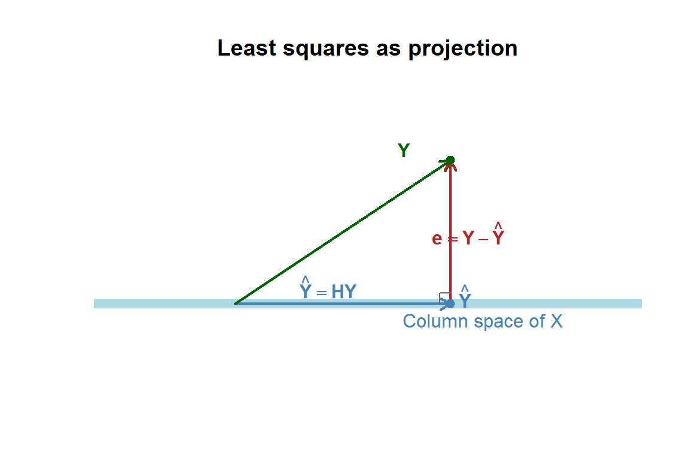

“The essence of mathematics is not to make simple things complicated, but to make complicated things simple.” - S. Gudder
11.1 The Matrices for the Different Components
Recall the regression model is \[\begin{align*}
y_{i}= & \beta_{0}+\beta_{1}x_{i1}+\beta_{2}x_{i2}+\cdots+\beta_{p-1}x_{i,p-1}+\varepsilon_{i}\\
& \varepsilon\overset{iid}{\sim}N\left(0,\sigma^{2}\right)
\end{align*}\] for \(i=1,\ldots,n\).
We define the response vector as \[\begin{align*}
\underset{{n\times1}}{\textbf{Y}}=\left[\begin{array}{c}
y_{1}\\
y_{2}\\
\vdots\\
y_{n}
\end{array}\right]
\end{align*}\]
11.1.2 Random Error Vector
We define the vector of random errors as \[\begin{align*}
\underset{{n\times1}}{\boldsymbol{\varepsilon}}=\left[\begin{array}{c}
\varepsilon_{1}\\
\varepsilon_{2}\\
\vdots\\
\varepsilon_{n}
\end{array}\right]
\end{align*}\]
11.1.3 Vector of Coefficients
We define the vector of coefficients as \[\begin{align*}
\underset{{p\times1}}{\boldsymbol{\beta}}=\left[\begin{array}{c}
\beta_{0}\\
\beta_{1}\\
\vdots\\
\beta_{p-1}
\end{array}\right]
\end{align*}\]
11.1.4 The Design Matrix
We define the matrix of the predictor variables as \[\begin{align*}
\underset{{n\times p}}{\textbf{X}}=\left[\begin{array}{ccccc}
1 & x_{11} & x_{12} & \cdots & x_{1,p-1}\\
1 & x_{21} & x_{22} & \cdots & x_{2,p-1}\\
\vdots & \vdots & \vdots & \ddots & \vdots\\
1 & x_{n1} & x_{n2} & \cdots & x_{n,p-1}
\end{array}\right]
\end{align*}\]
Note that the first column of \(\bf{X}\) is a vector of ones. This column will represent the coefficient of the \(y\)-intercept in the model.
ExampleExample 11.1: Building the response vector and design matrix in R
In chapter 10, we fit the multiple regression model
The product \({\bf X}{\boldsymbol\beta}\) is an \(n\times1\) vector, so it has one model mean for each observation.
11.2.1 Multivariate Normal Distribution
The assumption on the normal error model for the random error term is \[\begin{align*}
\varepsilon\overset{iid}{\sim} & N\left(0,\sigma^{2}\right).
\end{align*}\] In matrix notation, this can be expressed with the normal distribution.
Note that the univariate normal distribution has a probability density function expressed as \[\begin{align*}
f\left(x\right) & =\frac{1}{\sigma\sqrt{2\pi}}\exp\left[-\frac{1}{2\sigma^{2}}\left(x-\mu\right)^{2}\right]
\end{align*}\] where \(\mu\) is the mean of the distribution and \(\sigma\) is the standard deviation.
The multivariate normal distribution is expressed as \[\begin{align*}
f\left({\bf Y}\right) & =\frac{1}{\left(2\pi\right)^{n/2}\left|\boldsymbol{\Sigma}\right|^{1/2}}\exp\left[-\frac{1}{2}\left({\bf Y}-\boldsymbol{\mu}\right)^{\prime}\boldsymbol{\Sigma}^{-1}\left({\bf Y}-\boldsymbol{\mu}\right)\right]
\end{align*}\] where \({\bf Y}\) is a \(n\times1\) vector, \(\boldsymbol{\mu}\) is a \(n\times1\) vector of means, and \(\boldsymbol{\Sigma}\) is the \(n\times n\) covariance matrix.
We denote the multivariate normal distribution of a random vector \({\bf Y}\) as \[\begin{align*}
{\bf Y} & \sim N_{n}\left(\boldsymbol{\mu},\boldsymbol{\Sigma}\right).
\end{align*}\]
For the normal error model, the mean vector of the random vector \(\boldsymbol{\varepsilon}\) is a vector of zeros (\({\bf 0}\)) and the covariance matrix is \[\begin{align*}
{\bf Cov}\left(\boldsymbol{\varepsilon}\right) & =\left[\begin{array}{cccc}
\sigma^{2} & 0 & \cdots & 0\\
0 & \sigma^{2} & \cdots & 0\\
\vdots & \vdots & \ddots & \vdots\\
0 & 0 & \cdots & \sigma^{2}
\end{array}\right]\\
& =\sigma^{2}{\bf I}.
\end{align*}\]
NoteScalar and matrix assumptions side-by-side
The matrix notation is not adding new regression assumptions. It is rewriting the familiar scalar assumptions in a compact form.
Scalar statement
Matrix statement
Meaning
\(E(\varepsilon_i)=0\)
\(E({\boldsymbol\varepsilon})={\bf 0}\)
The errors average to 0.
\(Var(\varepsilon_i)=\sigma^2\)
Diagonal entries of \(Cov({\boldsymbol\varepsilon})\) are \(\sigma^2\)
Each error has the same variance.
\(Cov(\varepsilon_i,\varepsilon_j)=0\) for \(i\ne j\)
Off-diagonal entries of \(Cov({\boldsymbol\varepsilon})\) are 0
We now represent the normalerrors multiple regression model as \[
\begin{align}
{\textbf{Y}}= & {\textbf{X}}{\boldsymbol{\beta}}+{\boldsymbol{\varepsilon}}\\
& \boldsymbol{\varepsilon} \sim N_{n}\left({\bf 0},\sigma^{2}{\bf I}\right)
\end{align}
\tag{11.1}\]
Note that \[\begin{align*}
\textbf{E}\left(\textbf{Y}\right) & =\textbf{X}\boldsymbol{\beta}
\end{align*}\]
ExampleExample 11.2: The fitted mean vector
In practice, we estimate \({\boldsymbol\beta}\) with \({\bf b}\). Then \({\bf X}{\bf b}\) gives the fitted values.
The matrix product \({\bf X}{\bf b}\) gives the same fitted values as lm(). The observed responses do not usually fall exactly on these fitted values because the residuals are not usually zero.
11.3 Least Squares and Inferences Using Matrices
11.3.1 Least Squares Estimators
For the model in Equation 11.1 we want to minimize the squared distances between the observed \(y_i\) and the fitted \(\hat{y}_i\).
We will express the sum of the squared distances in Equation 10.3 in matrix terms as \[
\begin{align}
Q & =\left({\bf Y}-{\bf X}{\bf b}\right)^{\prime}\left({\bf Y}-{\bf X}{\bf b}\right)
\end{align}
\tag{11.2}\] where \({\bf Y}\) is the response vector, \({\bf X}\) is the design matrix, and \({\bf b}\) is the vector of estimators \[\begin{align*}
{\bf b} & =\left[\begin{array}{c}
b_{0}\\
b_{1}\\
\vdots\\
b_{p-1}
\end{array}\right]
\end{align*}\]
11.3.2 Minimizing the Sums of Squares
We will minimize \(Q\) in Equation 11.2 by taking the derivative with respect to \({\bf b}\) and setting it equal to the vector of zeros. The derivative is done using the properties listed in Chapter 10 and using the chain rule: \[\begin{align*}
\frac{\partial\left({\bf Y}-{\bf X}{\bf b}\right)^{\prime}\left({\bf Y}-{\bf X}{\bf b}\right)}{\partial{\bf b}} & =-2{\bf X}^{\prime}\left({\bf Y}-{\bf X}{\bf b}\right)
\end{align*}\]
Setting this derivative equal to the vector of zeros gives us \[\begin{align*}
-2{\bf X}^{\prime}\left({\bf Y}-{\bf X}{\bf b}\right)={\bf 0} & \Longrightarrow{\bf X}^{\prime}\left({\bf Y}-{\bf X}{\bf b}\right)={\bf 0}
\end{align*}\]
11.3.3 The Normal Equations
We can distribute \({\bf X}^{\prime}\) through the parentheses \[
\begin{align}
{\bf X}^{\prime}\left({\bf Y}-{\bf X}{\bf b}\right)={\bf 0} & \Longrightarrow{\bf X}^{\prime}{\bf Y}-{\bf X}^{\prime}{\bf X}{\bf b}={\bf 0}\\
& \Longrightarrow{\bf X}^{\prime}{\bf X}{\bf b}={\bf X}^{\prime}{\bf Y}
\end{align}
\tag{11.3}\] Equation Equation 11.3 represents the normal equations in matrix format.
11.3.4 The Estimators
Solving the normal equations for \({\bf b}\) gives us the estimators: \[
\begin{align}
{\bf X}^{\prime}{\bf X}{\bf b}={\bf X}^{\prime}{\bf Y} & \Longrightarrow\left({\bf X}^{\prime}{\bf X}\right)^{-1}{\bf X}^{\prime}{\bf X}{\bf b}=\left({\bf X}^{\prime}{\bf X}\right)^{-1}{\bf X}^{\prime}{\bf Y}\\
& \Longrightarrow{\bf b}=\left({\bf X}^{\prime}{\bf X}\right)^{-1}{\bf X}^{\prime}{\bf Y}
\end{align}
\tag{11.4}\]
ExampleExample 11.3: Computing the coefficient vector with matrices
For the trees model, the coefficient vector can be calculated directly from
The matrix formula and lm() give the same coefficient estimates. The matrix form is not a different method; it is a compact way to write ordinary least squares for any number of predictors.
ExampleExample 11.4: A singular design matrix from a redundant predictor
requires \({\bf X}'{\bf X}\) to have an inverse. If one predictor is a perfect copy or exact multiple of another predictor, the columns of \({\bf X}\) are redundant and \({\bf X}'{\bf X}\) is singular.
For example, create a new predictor that is exactly twice Girth.
trees_redundant<-transform(trees, Girth_copy =2*Girth)X_singular<-model.matrix(Volume~Girth+Girth_copy+Height, data =trees_redundant)XtX_singular<-t(X_singular)%*%X_singularinverse_message<-tryCatch({solve(XtX_singular)"Inverse exists"}, error =function(e)"No inverse: X'X is singular")singular_summary<-tibble::tibble( quantity =c("columns in X", "rank of X", "full column rank?", "inverse check"), result =c(as.character(ncol(X_singular)),as.character(qr(X_singular)$rank),as.character(qr(X_singular)$rank==ncol(X_singular)),inverse_message))knitr::kable(singular_summary)
quantity
result
columns in X
4
rank of X
3
full column rank?
FALSE
inverse check
No inverse: X’X is singular
The design matrix has more columns than its rank because Girth_copy contains no new information beyond Girth. This is why the inverse in the least-squares formula does not exist.
singular_fit<-lm(Volume~Girth+Girth_copy+Height, data =trees_redundant)broom::tidy(singular_fit)|>knitr::kable(digits =4)
term
estimate
std.error
statistic
p.value
(Intercept)
-57.9877
8.6382
-6.7129
0.0000
Girth
4.7082
0.2643
17.8161
0.0000
Girth_copy
NA
NA
NA
NA
Height
0.3393
0.1302
2.6066
0.0145
R can still detect the redundancy and fit the estimable part of the model, but the matrix inverse formula fails because the coefficient vector is not uniquely determined.
11.3.5 Fitted Values
The fitted values are \[
\begin{align}
\hat{{\bf Y}} & ={\bf X}{\bf b}
\end{align}
\tag{11.5}\]
Substituting Equation 11.4 for \({\bf b}\) gives us \[
\begin{align}
\hat{{\bf Y}}={\bf X}\left({\bf X}^{\prime}{\bf X}\right)^{-1}{\bf X}^{\prime}{\bf Y}
\end{align}
\tag{11.6}\]
The \(n\times n\) matrix \({\bf X}\left({\bf X}^{\prime}{\bf X}\right)^{-1}{\bf X}^{\prime}\) pops up a number of times in multiple regression analysis. We call this matrix the hat matrix and denote it as \[
\begin{align}
{\bf H} & ={\bf X}\left({\bf X}^{\prime}{\bf X}\right)^{-1}{\bf X}^{\prime}
\end{align}
\tag{11.7}\]
Thus, the fitted values can be expressed as \[
\begin{align}
\hat{{\bf Y}} & ={\bf H}{\bf Y}
\end{align}
\tag{11.8}\]
ExampleExample 11.5: The hat matrix maps observed responses to fitted values
The hat matrix is called the “hat” matrix because it puts the hat on \({\bf Y}\):
The hat matrix is an \(n\times n\) matrix. For the trees data, it is 31 by 31, because it transforms the whole response vector into the whole fitted-value vector.
NoteThe diagonal of the hat matrix
The diagonal entries of \({\bf H}\) are called leverages. Leverage measures how unusual an observation’s predictor values are compared with the rest of the data.
This chapter focuses on the matrix form of fitted values. Later, leverage will become important when we study influential observations.
ExampleExample 11.6: Fitted values as a projection
Geometrically, least squares projects the observed response vector \({\bf Y}\) onto the column space of \({\bf X}\). The fitted vector \(\hat{\bf Y}\) is the point in that column space closest to \({\bf Y}\), and the residual vector \({\bf e}={\bf Y}-\hat{\bf Y}\) is perpendicular to that space.
The picture below is a two-dimensional cartoon of the idea. In a real regression problem, the vectors may live in a much higher-dimensional observation space.
plot(NA, xlim =c(-0.3, 4), ylim =c(-0.4, 2.8), xlab ="", ylab ="", axes =FALSE, asp =1, main ="Least squares as projection")abline(h =0, col ="lightblue", lwd =8)text(3.45, -0.25, "Column space of X", col ="steelblue")arrows(0, 0, 3, 0, length =0.1, lwd =2, col ="steelblue")arrows(0, 0, 3, 2, length =0.1, lwd =2, col ="darkgreen")arrows(3, 0, 3, 2, length =0.1, lwd =2, col ="firebrick")points(c(3, 3), c(0, 2), pch =19, col =c("steelblue", "darkgreen"))text(3.2, 0.12, expression(hat(bold(Y))), col ="steelblue")text(2.35, 2.15, expression(bold(Y)), col ="darkgreen")text(3.25, 1, expression(bold(e)==bold(Y)-hat(bold(Y))), col ="firebrick")text(1.3, 0.25, expression(hat(bold(Y))==bold(H)*bold(Y)), col ="steelblue")segments(2.85, 0, 2.85, 0.15, col ="gray40")segments(2.85, 0.15, 3, 0.15, col ="gray40")

This visual explains why the normal equations give \({\bf X}'{\bf e}={\bf 0}\): after projection, the leftover residual vector is orthogonal to every direction contained in the column space of \({\bf X}\).
11.3.6 Residuals
The residuals can be expressed in matrix terms as \[
\begin{align}
{\bf e} & ={\bf Y}-\hat{{\bf Y}}\\
& ={\bf Y}-{\bf X}{\bf b}
\end{align}
\tag{11.9}\]
Using Equation 11.8, the residuals can be expressed in terms of the hat matrix as well \[
\begin{align}
{\bf e} & ={\bf Y}-{\bf H}{\bf Y}\\
& =\left({\bf I}-{\bf H}\right){\bf Y}
\end{align}
\tag{11.10}\]
ExampleExample 11.7: Least-squares residuals are orthogonal to the design matrix
The normal equations imply
\[
{\bf X}'{\bf e}={\bf 0}.
\]
This means the least-squares residual vector is orthogonal to every column of the design matrix, including the intercept column.
The values are essentially zero, up to tiny numerical rounding error. This is one of the most important geometric facts about least squares: the residual vector is perpendicular to the space spanned by the predictor columns.
11.3.7 Estimator for the Variance
We have seen in simple regression that \(s^{2}\) is an estimate of the variance \(\sigma^{2}\). Recall that we call \(s^{2}\) the MSE which is just the SSE divided by the degrees of freedom (\(n-2\) in simple linear regression).
In matrix terms, we can express SSE as \[
\begin{align}
SSE & ={\bf e}^{\prime}{\bf e}\\
& ={\bf Y}^{\prime}\left({\bf I}-{\bf H}\right)^{\prime}\left({\bf I}-{\bf H}\right){\bf Y}\\
& ={\bf Y}^{\prime}\left({\bf I}-{\bf H}\right){\bf Y}
\end{align}
\tag{11.11}\]
The term \(\left({\bf I}-{\bf H}\right)^{\prime}\left({\bf I}-{\bf H}\right)\) simplifies to \(\left({\bf I}-{\bf H}\right)\) since \(\left({\bf I}-{\bf H}\right)\) is idempotent1
The MSE is \[\begin{align*}
MSE & =\frac{SSE}{n-p}
\end{align*}\]
Here the degrees of freedom are now \(n-p\) since there are \(p\) parameters \(\left(\beta_{0},\beta_{1},\ldots,\beta_{p-1}\right)\) that need to be estimated first in order to get \(SSE\). As before, MSE is an estimator for \(\sigma^{2}\).
ExampleExample 11.8: Computing SSE and MSE with matrices
Because \({\bf e}\) is the residual vector, the error sum of squares can be written as
\[
SSE={\bf e}'{\bf e}.
\]
sse_matrix<-as.numeric(t(e_trees)%*%e_trees)n_trees<-nrow(X_trees)p_trees<-ncol(X_trees)mse_matrix<-sse_matrix/(n_trees-p_trees)mse_comparison<-tibble::tibble( quantity =c("SSE from e'e", "MSE from SSE / (n - p)", "MSE from lm summary"), value =c(sse_matrix,mse_matrix,summary(trees_matrix_fit)$sigma^2))knitr::kable(mse_comparison, digits =6)
quantity
value
SSE from e’e
421.92136
MSE from SSE / (n - p)
15.06862
MSE from lm summary
15.06862
For this model, \(n=31\) and \(p=3\), so the error degrees of freedom are \(n-p=28\).
11.4 Recap
This chapter rewrote the multiple regression model using matrix notation.
Idea
Meaning
Response vector
\({\bf Y}\) is the \(n\times1\) vector of observed responses.
Error vector
\({\boldsymbol\varepsilon}\) is the \(n\times1\) vector of random errors.
Coefficient vector
\({\boldsymbol\beta}\) is the \(p\times1\) vector of regression parameters.
Design matrix
\({\bf X}\) is the \(n\times p\) matrix containing the intercept column and predictor columns.
What are the dimensions of \({\bf Y}\) in the matrix regression model?
Why does the design matrix \({\bf X}\) usually include a first column of ones?
If a model has an intercept and two predictors, how many columns does \({\bf X}\) have?
In the matrix model \({\bf Y}={\bf X}{\boldsymbol\beta}+{\boldsymbol\varepsilon}\), what does \({\bf X}{\boldsymbol\beta}\) represent?
What does the assumption \({\boldsymbol\varepsilon}\sim N_n({\bf 0},\sigma^2{\bf I})\) say about the errors?
How do the scalar assumptions \(E(\varepsilon_i)=0\), \(Var(\varepsilon_i)=\sigma^2\), and \(Cov(\varepsilon_i,\varepsilon_j)=0\) appear in matrix notation?
Why is \(Q=({\bf Y}-{\bf X}{\bf b})'({\bf Y}-{\bf X}{\bf b})\) the matrix version of the sum of squared residuals?
What are the normal equations in matrix form?
Why must \({\bf X}'{\bf X}\) be invertible for the formula \({\bf b}=({\bf X}'{\bf X})^{-1}{\bf X}'{\bf Y}\) to work?
Give an example of how a redundant predictor can make \({\bf X}'{\bf X}\) singular.
What is the hat matrix, and why is it called the hat matrix?
What does it mean to say that least squares projects \({\bf Y}\) onto the column space of \({\bf X}\)?
What does the residual vector \({\bf e}\) measure?
What does \({\bf X}'{\bf e}={\bf 0}\) mean conceptually?
Why is the denominator of MSE equal to \(n-p\) in multiple regression?
What information is contained on the diagonal of the hat matrix?
How does matrix notation help when moving from simple regression to multiple regression?
TipSolutions
\(n\times1\). The response vector has one row for each observation and one column.
To include the intercept. The first column of ones is multiplied by \(\beta_0\), which adds the same intercept term to every observation’s model mean.
Three columns. There is one intercept column plus one column for each of the two predictors, so \(p=3\).
The model mean vector. The product \({\bf X}{\boldsymbol\beta}\) contains the expected response values implied by the regression model.
Zero mean, common variance, no covariance. The errors have mean 0, common variance \(\sigma^2\), and covariance matrix \(\sigma^2{\bf I}\), which represents no covariance between different errors.
They become vector and matrix statements. The assumptions become \(E({\boldsymbol\varepsilon})={\bf 0}\) and \(Cov({\boldsymbol\varepsilon})=\sigma^2{\bf I}\). The zero vector gives the mean-zero assumption; the diagonal \(\sigma^2\) entries give common variance; the off-diagonal zeros give zero covariance between different errors.
It multiplies residuals by themselves and sums. The vector \({\bf Y}-{\bf X}{\bf b}\) contains residuals. Multiplying its transpose by itself gives the sum of squared residuals.
\({\bf X}'{\bf X}{\bf b}={\bf X}'{\bf Y}\). These equations come from setting the derivative of the least-squares criterion equal to zero.
The inverse is needed. The formula solves the normal equations by multiplying by \(({\bf X}'{\bf X})^{-1}\). If that inverse does not exist, the formula cannot produce a unique coefficient vector.
Exact redundancy causes singularity. If one predictor is exactly twice another predictor, or if a copied predictor is included twice, then one column of \({\bf X}\) is an exact linear combination of another. The model cannot uniquely separate those effects.
It maps observed values to fitted values. The hat matrix is \({\bf H}={\bf X}({\bf X}'{\bf X})^{-1}{\bf X}'\). It is called the hat matrix because \(\hat{\bf Y}={\bf H}{\bf Y}\).
Closest fitted vector. The column space of \({\bf X}\) contains all possible fitted vectors \({\bf X}{\bf b}\). Least squares chooses the fitted vector in that space closest to the observed response vector \({\bf Y}\).
Observed minus fitted. The residual vector contains the differences between observed responses and fitted values.
Residuals are orthogonal to the predictor columns. The residual vector has no remaining linear association with any column of the design matrix under the least-squares fit.
Because \(p\) parameters were estimated. The model uses \(p\) degrees of freedom to estimate the coefficients, leaving \(n-p\) error degrees of freedom.
Leverage. The diagonal entries of the hat matrix measure leverage, or how unusual each observation’s predictor values are.
It scales the notation. Matrix notation lets us write one formula for any number of predictors instead of writing separate equations for every coefficient.
Idempotent matrix is a square matrix which when multiplied by itself, gives back the same matrix.↩︎